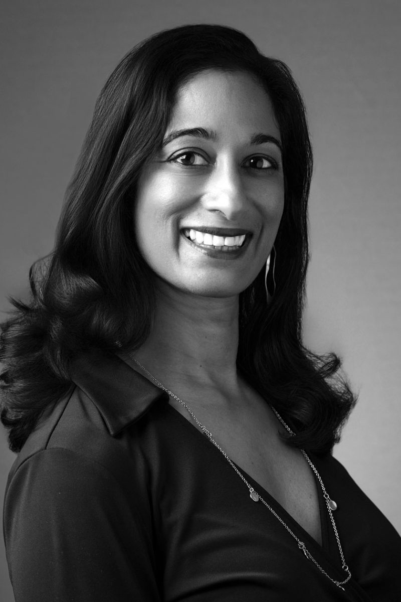
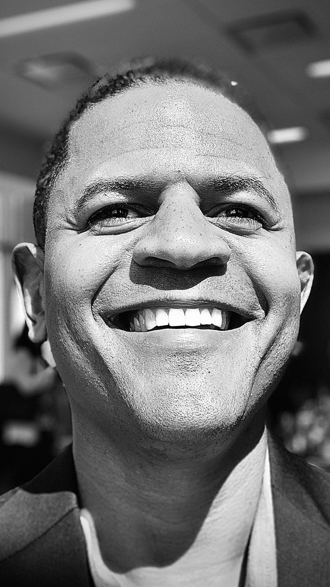

The Three Pillars
With the launch of this plan, CCM shifts its focus from the sustainability of individual newsrooms to strengthening the sector as a whole. We are organizing our work around three mutually reinforcing pillars designed so that insight and shared power flow across all community media:
- Analyze: Generating shared knowledge, mapping the sector, and publishing actionable research.
- Amplify: Elevating effective practices and ensuring community media leaders are recognized on journalism's main stages.
- Activate: Connecting historically isolated outlets and creators to the resources, technology, and policy opportunities they need to thrive.
Through this framework, we are deepening our commitment to Hyperlocal newsrooms, Identity-based & Cultural Media, Immigrant & Diaspora Media, LGBTQ+ Media, and Community and In-Language Creators.
Honoring the Impact of Our Initiatives
When CCM expanded into a national institution in 2019, our mandate was clear: to meet the urgent, demographic-specific needs of a sector sidelined by the broader industry. Our Latino, Black, and Asian Media Initiatives served as specialized incubators offering research, strategic support, and a sense of sanctuary during some of the most tumultuous years in modern journalism.
Our recent strategic audit confirmed the extent of these initiatives' achievements, but organizing our work by community inadvertently created silos and left groups like Native and Indigenous media at the margins. Because this growing sector needs a unified approach, we have transitioned to a framework focused on strengthening the community and ethnic media ecosystem as a whole.
Growing Our Team to Meet the Moment
A bold strategy requires a dynamic team. Under Jean Friedman-Rudovsky's leadership, we are expanding our capacity to ensure this field-building vision becomes a reality.
We are thrilled to officially announce two exciting additions to the CCM team, alongside a crucial evolution for one of our long-time leaders:
 |
Kavitha Rajagopalan, Director of Research and Analysis: Following her incredible work as the founding Director of the Asian Media Initiative at CCM, Kavitha is stepping into a new role. She will now drive the Analyze pillar of our strategic plan, expanding her expertise to map, build insight, and develop actionable thought leadership for the entire national ecosystem of community media. [Read Kavitha's full bio]
|
 |
LaMonte Guillory, Director of Communications Strategy: LaMonte brings over two decades of progressive leadership in strategic communications, narrative development, and alliance-building. Operating as a systems-level leader, he is spearheading CCM's brand evolution and leading the vision for our Amplify pillar to ensure the groundbreaking work of community media is widely visible and highly valued. [Read LaMonte's full bio]
|
 |
Elaine Díaz Rodríguez, Director of Partnerships: Elaine builds vital bridges between community media outlets and the robust journalism support sector. Operating as a systems-level leader, she is driving the vision for our Activate pillar to unlock potential, catalyze peer-to-peer learning, and ensure community and ethnic media have a seat at the table for the industry's biggest conversations. [Read Elaine's full bio] |
We will also soon be welcoming a new Head of Product and Data to the team. Alongside Darlie Gervais, Advertising Boost Initiative Director, and Jennifer Cheng, Manager of Operations and Information Design, we are ready to do the work.
Amplify the Vision: How You Can Help
This strategy is designed for partnership and collaboration. We need your voice to ensure this vision reaches every corner of the journalism support ecosystem. Here is how you can share the news today:
- Forward this newsletter to colleagues and media makers in your network.
- Share our vision on LinkedIn: Let your network know that the brilliant work of community media is moving from the margins to the center stage.
- Reach out: If reading the plan sparks ideas or opportunities to collaborate, reach out to LaMonte Guillory at lamonte.guillory@journalism.cuny.edu.
With Deepest Gratitude
None of this strategy matters without the tireless, essential work you do every day to keep your communities informed. Thank you for your continued partnership, your resilience, and your dedication to this field. We are honored to share this renewed vision and keep building collective power together.
|